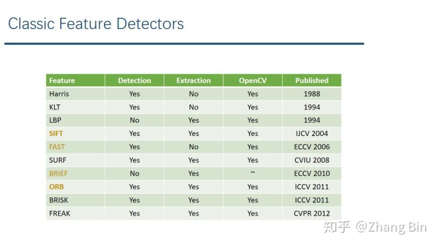
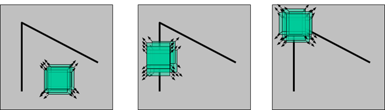

图像特征检测与描述
特征检测（英语：Feature detection）是计算机视觉和图像处理中的一个概念。它指的是使用计算机提取图像信息，决定每个图像的点是否属于一个图像特征。特征检测的结果是把图像上的点分为不同的子集，这些子集往往属于孤立的点、连续的曲线或者连续的区域。
图像特征分类
特征的精确定义往往由问题或者应用类型决定。特征是一个数字图像中“有趣”的部分，它是许多计算机图像分析算法的起点。因此一个算法是否成功往往由它使用和定义的特征决定。因此特征检测最重要的一个特性是“可重复性”：同一场景的不同图像所提取的特征应该是相同的。
特征检测是图象处理中的一个初级运算，也就是说它是对一个图像进行的第一个运算处理。它检查每个像素来确定该像素是否代表一个特征。假如它是一个更大的算法的一部分，那么这个算法一般只检查图像的特征区域。作为特征检测的一个前提运算，输入图像一般通过高斯模糊核在尺度空间中被平滑。此后通过局部导数运算来计算图像的一个或多个特征。
常用的图像特征分成以下四类：
- 边缘
边缘指组成两个图像区域之间边界（或边缘）的像素。一般一个边缘的形状可以是任意的，还可能包括交叉点。在实践中边缘一般被定义为图像中拥有大的梯度的点组成的子集。一些常用的算法还会把梯度高的点联系起来来构成一个更完善的边缘的描写。
- 角
角指图像中点似的特征，在局部它有两维结构。早期的算法首先进行边缘检测，然后分析边缘的走向来寻找边缘突然转向（角）。后来发展的算法不再需要边缘检测这个步骤，而是可以直接在图像梯度中寻找高度曲率。
- 区域
与角不同的是区域描写一个图像中的一个区域性的结构，但是区域也可能仅由一个像素组成，因此许多区域检测也可以用来监测角。一个区域监测器检测图像中一个对于角监测器来说太平滑的区域。
区域检测可以被想象为把一张图像缩小，然后在缩小的图像上进行角检测。
- 脊
长条形的物体被称为脊。在实践中脊可以被看作是代表对称轴的一维曲线，此外局部针对于每个脊像素有一个脊宽度。从灰梯度图像中提取脊要比提取边缘、角和区域困难。在空中摄影中往往使用脊检测来分辨道路，在医学图像中它被用来分辨血管。
边缘检测
边缘检测（英语：Edge detection）是图像处理和计算机视觉中的基本问题，边缘检测的目的是标识数字图像中亮度变化明显的点。图像属性中的显著变化通常反映了属性的重要事件和变化。这些包括（i）深度上的不连续、（ii）表面方向不连续、（iii）物质属性变化和（iv）场景照明变化。 边缘检测是图像处理和计算机视觉中，尤其是特征检测中的一个研究领域。
图像边缘检测大幅度地减少了数据量，并且剔除了可以认为不相关的信息，保留了图像重要的结构属性。有许多方法用于边缘检测，它们的绝大部分可以划分为两类：基于查找一类和基于零穿越的一类。基于查找的方法通过寻找图像一阶导数中的最大和最小值来检测边界，通常是将边界定位在梯度最大的方向。基于零穿越的方法通过寻找图像二阶导数零穿越来寻找边界，通常是Laplacian过零点或者非线性差分表示的过零点。
边缘检测的方法
有许多用于边缘检测的方法，他们大致可分为两类：
- 基于搜索的边缘检测
基于搜索的边缘检测方法首先计算边缘强度，通常用一阶导数表示，例如梯度模;然后，用计算估计边缘的局部方向，通常采用梯度的方向，并利用此方向找到局部梯度模的最大值.
- 基于零交叉的边缘检测
基于零交叉的方法找到由图像得到的二阶导数的零交叉点来定位边缘.通常用拉普拉斯算子或非线性微分方程的零交叉点，我们将在后面的小节中描述.
滤波做为边缘检测的预处理通常是必要的，通常采用高斯滤波.
已发表的边缘检测方法应用计算边界强度的度量，这与平滑滤波有本质的不同.正如许多边缘检测方法依赖于图像梯度的计算，他们用不同种类的滤波器来估计x-方向和y-方向的梯度.
角检测
角检测（英语：Corner detection）或兴趣点检测（interest point detection），是计算机视觉系统中用来提取特征以及推测图像内容的一种方法.角检测的应用很广，经常用在运动检测，跟踪，图像镶嵌（image mosaicing），全景图缝合（panorama stiching），三维建模以及物体识别中.
问题定义
两条边的交点形成一个角（点）。而图像的要点（也称为受关注点）是指图像中具有代表性以及稳健性（即指该点能够在有噪声干扰的情况下也能稳定的被定位，在大陆亦被称为：鲁棒性）的点。也就是说，要点可以是角（点），也可以不是，例如局部亮点或暗点，线段终点，或者曲线上的曲率最大值点。在实际应用中，很多所谓的（角）点检测算法其实是检测要点，而不仅仅是角（点）。所以，如果我们只想检测角的话，还需要对检测出的要点进一步分析。
角检测的方法
在现实世界中，角点对应于物体的拐角，道路的十字路口、丁字路口等。从图像分析的角度来定义角点可以有以下两种定义：
- 角点可以是两个边缘的角点；
- 角点是邻域内具有两个主方向的特征点；
前者往往需要对图像边缘进行编码，这在很大程度上依赖于图像的分割与边缘提取，具有相当大的难度和计算量，且一旦待检测目标局部发生变化，很可能导致操作的失败。早期主要有Rosenfeld和Freeman等人的方法，后期有CSS等方法。
基于图像灰度的方法通过计算点的曲率及梯度来检测角点，避免了第一类方法存在的缺陷，此类方法主要有Moravec算子、Forstner算子、Harris算子、SUSAN算子等。

Harris算法
Harris角点检测基本原理如图2所示。人眼对角点的识别通常是在一个局部的小区域或小窗口完成的。如果在各个方向上移动这个特征的小窗口，窗口内区域的灰度发生了较大的变化，那么就认为在窗口内遇到了角点。如果这个特定的窗口在图像各个方向上移动时，窗口内图像的灰度没有发生变化，那么窗口内就不存在角点；如果窗口在某一个方向移动时，窗口内图像的灰度发生了较大的变化，而在另一些方向上没有发生变化，那么，窗口内的图像可能就是一条直线的线段。

SIFT算法
SIFT(Scale-invariant features transform, 尺度不变特征变换)是一种检测局部特征的算法，该算法通过求一幅图中的特征点（interest points,or corner points）及其有关scale 和 orientation 的描述子得到特征并进行图像特征点匹配，获得了良好效果。SIFT特征不只具有尺度不变性，即使改变旋转角度，图像亮度或拍摄视角，仍然能够得到好的检测效果。该算法由 David Lowe在1999年所发表，2004年完善总结。
SIFT算子是把图像中检测到的特征点用一个128维的特征向量进行描述，因此一幅图像经过SIFT算法后表示为一个128维的特征向量集，该特征向量集具有对图像缩放，平移，旋转不变的特征，对于光照、仿射和投影变换也有一定的不变性，是一种非常优秀的局部特征描述算法。
SIFT算法的流程分别为：
- 尺度空间极点检测
- 关键点精确定位
- 关键点的方向确定
- 特征向量的生成
ORB算法
ORB的全称是ORiented Brief，是文章ORB: an efficient alternative to SIFT or SURF中提出的一种新的角点检测与特征描述算法。实际上，ORB算法是将FAST角点检测与BRIEF特征描述结合并进行了改进。
ORB特征由关键点和描述子两部分组成。它的关键点称为“Oriented Fast”，是一种改进的FAST角点。描述子称为“BRIEF(Binary Robust Independent Elementary Feature)”。因此提取ORB特征分为如下两个步骤：
- 提取FAST角点(相较于原版FAST角点，ORB中计算了特征点的主方向，为后续的BRIEF描述子增加了旋转不变性)
- 计算BRIEF描述子
参考链接
- 特征检测,by wikipedia.
- 边缘检测,by wikipedia.
- 角检测,by wikipedia.
- Harris角点,by Ronny.
- 特征点匹配——SIFT算法详解,by lhanchao.
- ORB特征提取、匹配及实现,by zhaoxuhui.
- 传统计算机视觉中图像特征匹配方法的原理介绍（SIFT 和 ORB）,by Zhang Bin.